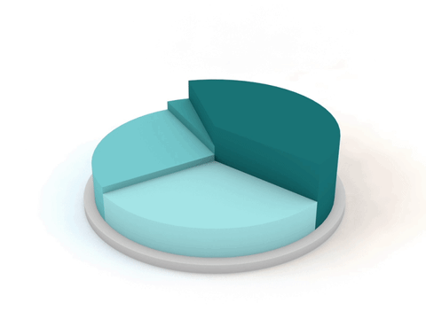
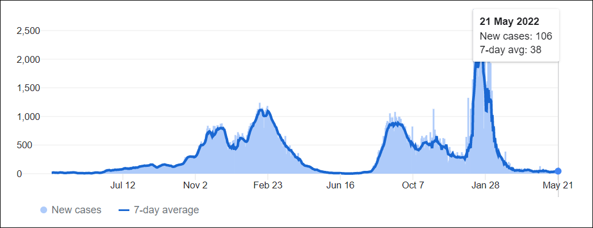
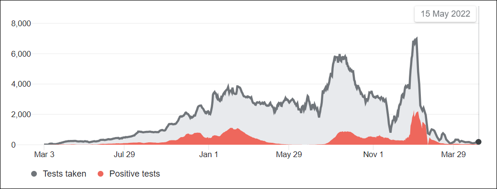
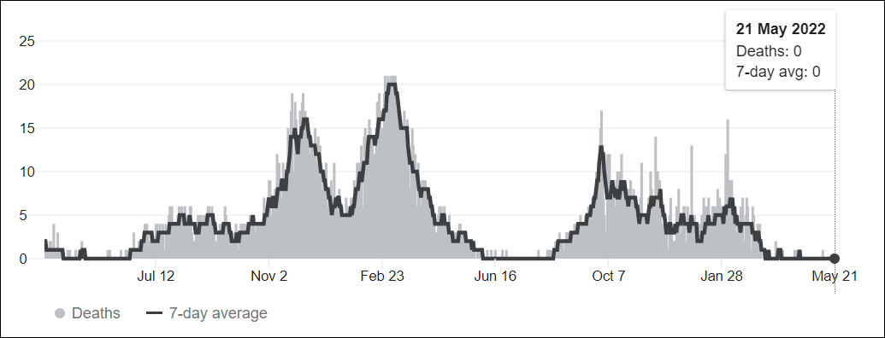

"Randomization is too important to be left to chance!" Statistics are taken from World Health Organization.

Albania has administered at least 2,840,948 doses of COVID vaccines so far. Assuming every person needs 2 doses, that's enough to have vaccinated about 49.8% of the country's population. During the last week reported, Albania averaged about 1,103 doses administered each day. At that rate, it will take a further 518 days to administer enough doses for another 10% of the population.
Some measures to contain COVID 19 remain in effect in Albania. Facemasks must be worn while indoors and there is a night time curfew in effect from 12am (midnight) until 6am. It is recommended that you follow the advice of local authorities at all times to avoid paying fines. It is no longer necessary to undergo quarantine on arrival in Albania from abroad, and restrictions on travel within the country no longer apply. Albania has opened land borders with neighbouring countries, and commercial flights are in operation to Tirana Airport.
If you are planning to travel in Albania, please get updates on the statistics of active cases from World Health Organization
Get UpdatesGraph of new cases
Albania is reporting 38 new infections on average each day, 2% of the peak — the highest daily average reported on January 22.
Graph of Covid tests taken
The number of positive tests may not be equal to the number of positive cases because of reporting differences across locations. It's also common for a single person to take more than one test. This data uses reporting from polymerase chain reaction (PCR) and antigen tests.
Graph of deaths
The actual death toll from COVID-19 is likely to be higher than the number of confirmed deaths this is due to limited testing and challenges in the attribution of the cause of death. The difference between confirmed deaths and actual deaths varies by country.
"Randomization is too important to be left to chance!" Statistics are taken from World Health Organization.